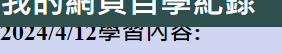
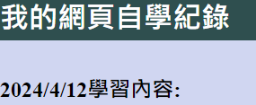

困境1:部份情況出現文字被遮蓋
- 問題敘述:
- 解決方法:
儘管跟著網路上的教學，但在因應自己的需求調整程式碼後，在開啟網頁仍遇到最上排文字部分被遮蓋的問題
調整各分頁中的第一個section的上邊距
最終達成了我預想的效果。
困境2:發布網站後無法顯示圖片
- 問題敘述:
- 解決方法:
進入網站後，原本應該有圖片的地方卻只有提示文字
我猜測可能是連結的檔案名稱不對，不過直接將路徑打在搜尋欄卻又可以打開圖片，因此我上網查詢其他可能的原因。
結果在我查詢stack overflow網站後，一名網友也和我有相同的處境，我跟著他的做法打上完整的路徑，並等待github大約十幾分鐘時間後，圖片終於可以正常顯示了!